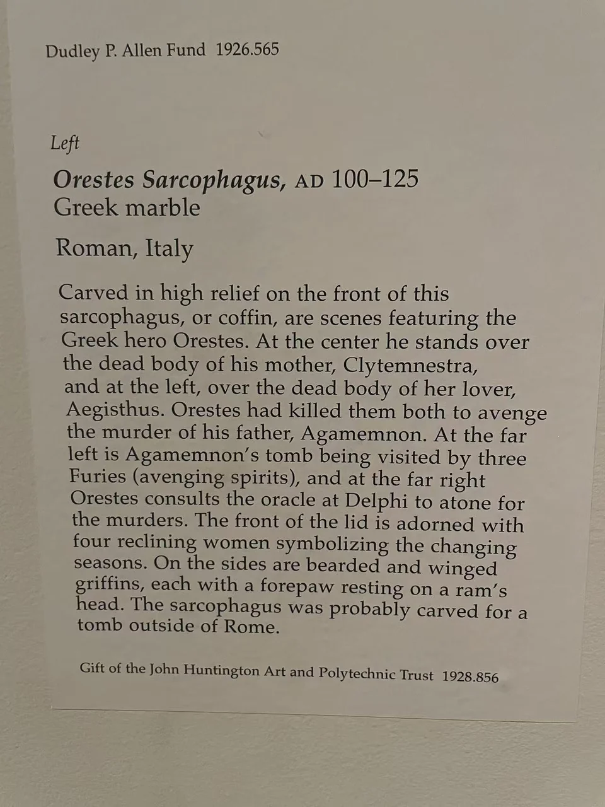

ROMAN SARCOPHAGI / R17
俄瑞斯忒斯石棺
找到三次出现的短剑，也就找到同一个人跨过不同情节的路径。

- 年代
- 约100—125年
- 材料
- 希腊大理石
- 收藏
- 克利夫兰艺术博物馆
- 观看地点
- 克利夫兰艺术博物馆 · 克利夫兰
- 馆藏号
- 1928.856.a（棺身）；1928.856.b（棺盖）
- 制作地区
- 罗马，意大利（馆方地域归属）
俄瑞斯忒斯出现三次
克利夫兰馆方指出，持短剑的俄瑞斯忒斯在正面出现三次。中部表现他为父亲阿伽门农复仇、杀死母亲克吕泰涅斯特拉及其情人；左端有父亲的墓与复仇女神，右端则是由三脚架等标志指认的德尔斐场景。重复人物让一段有前因后果的悲剧，聚集在同一个长方形中。 [23]
棺盖上的另一种时间
身体在棺身上冲突、转折，棺盖四位卧女却舒展开来。馆方将她们从右至左辨作冬、春、夏、秋，以衣着及篮内物品区分。英雄经历与季节循环并置，使石棺同时容纳人的事件与不断更替的时间。 [23]
现场展签 · 1张

资料与来源
断代、收藏与文献说明
棺身1928.856.a与棺盖1928.856.b分别编号。官网定年为约100—125年。 [23]